Downtown Canton · Since 1949
Your favorite chair, made new again.
Reupholstery, refinishing and custom cushions for homes, offices, restaurants and boats — done by hand in our shop on Cleveland Ave. Preserve a valued heirloom or give it a contemporary new look.
- Residential & commercial
- Ask about pick-up & delivery
- Quotes by email with photos
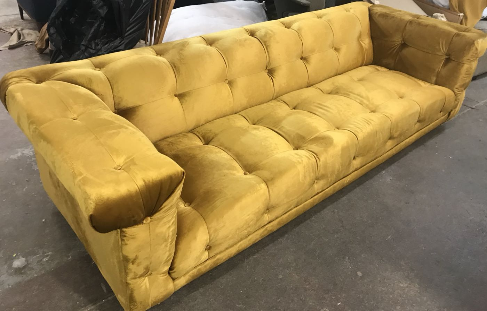
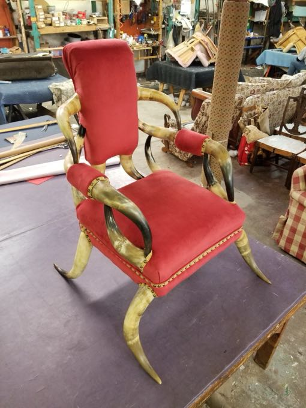
What we do
One shop for fabric, foam and fine wood.
From a single dining chair to a waiting room full of seating, recovering good quality pieces can save you money compared to buying new.
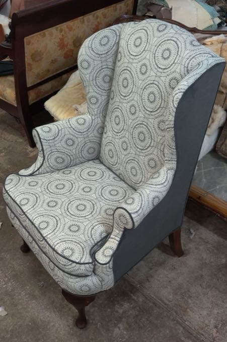
Residential reupholstery
Sofas, chairs, ottomans, headboards and kitchen booths, rebuilt from the frame up.
Learn more Business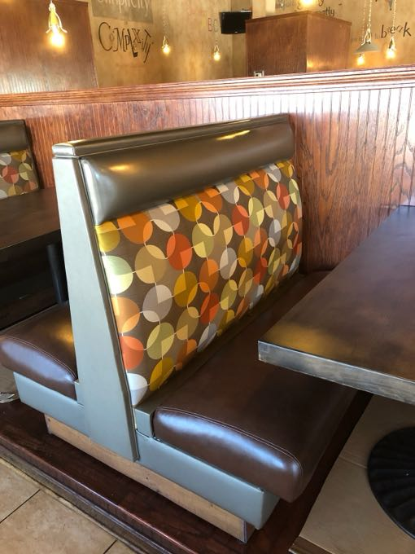
Commercial seating
Restaurant booths, exam tables, dental chairs, church pews and office chairs.
Learn more Wood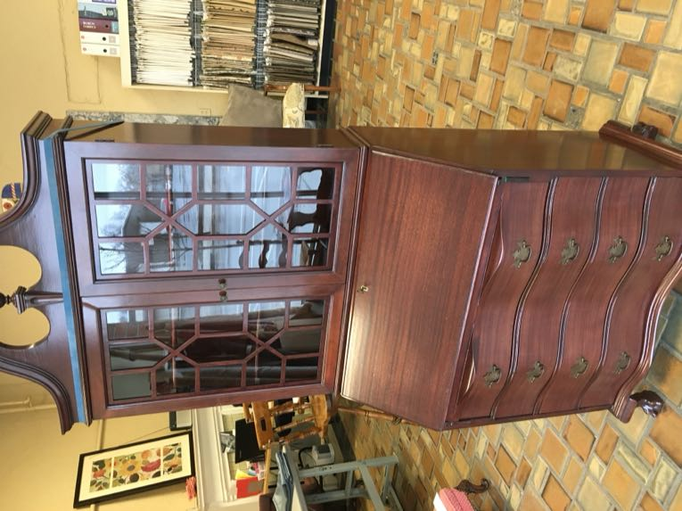
Furniture refinishing
Single chairs to complete dining sets, stained or painted. Stripping only, too.
Learn more Outdoor & boat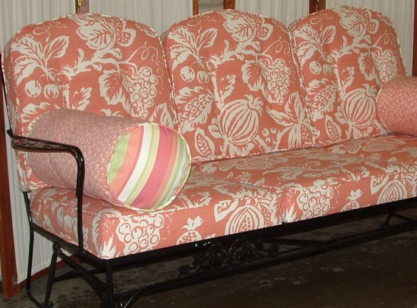
Custom cushions
Patio, window seat and boat cushions, plus decorative pillows.
Learn more Showroom
Foam & fabric
Fabric, leather and vinyl from top mills. Foam cut to size, down added or replaced.
Learn more Ships
Shower seats
ADA compliant replacement shower seats in four sizes, made in the shop.
Learn moreBefore & after
Drag the stitch. See the difference.
Real pieces from our workroom. Slide to compare how they came in and how they went home.
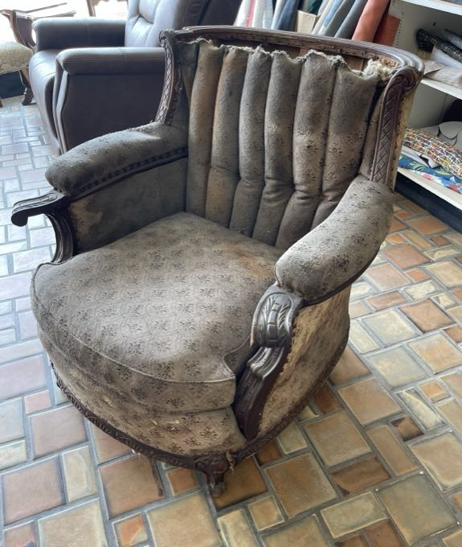
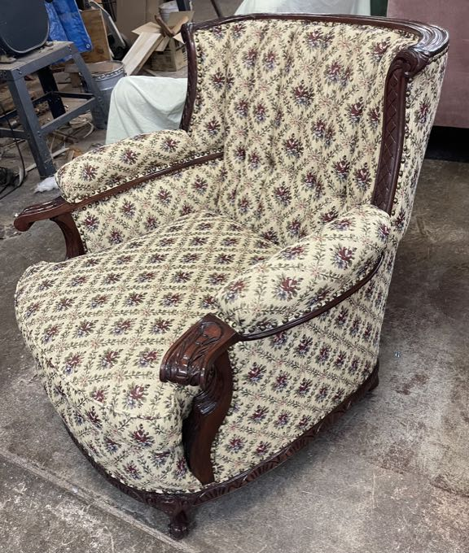
BeforeAfterA worn 1930s wingback, refinished and reupholstered.
How it's done
The finest fabric needs a good frame underneath.
Send photos
Email pictures and dimensions for a quote, or call the shop.
Strip it down
We remove the old cover and padding in our shop.
Fix the frame
The frame is checked for tightness and repaired. Coil springs are retied if needed.
Dress it new
Fresh padding and your fabric — in the original style or a whole new look.
From the workroom
Pieces we've brought back.
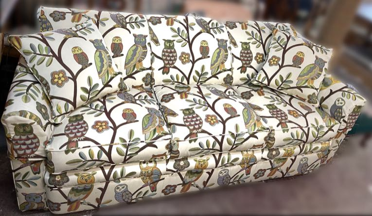
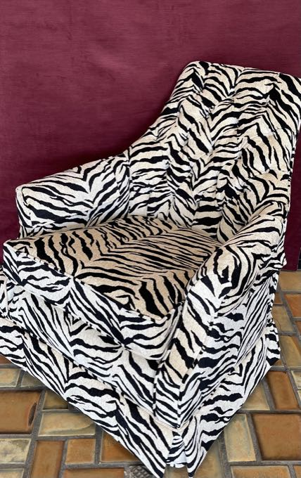
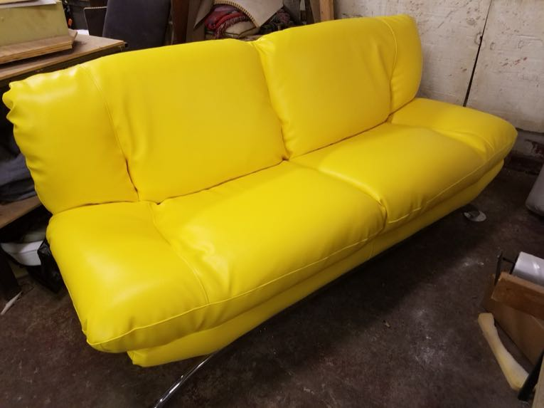
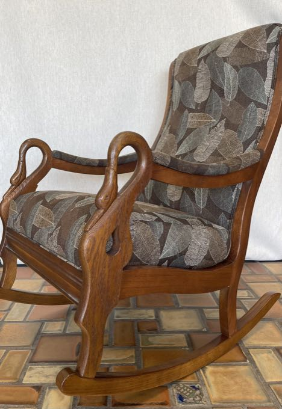
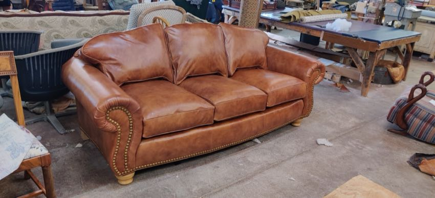
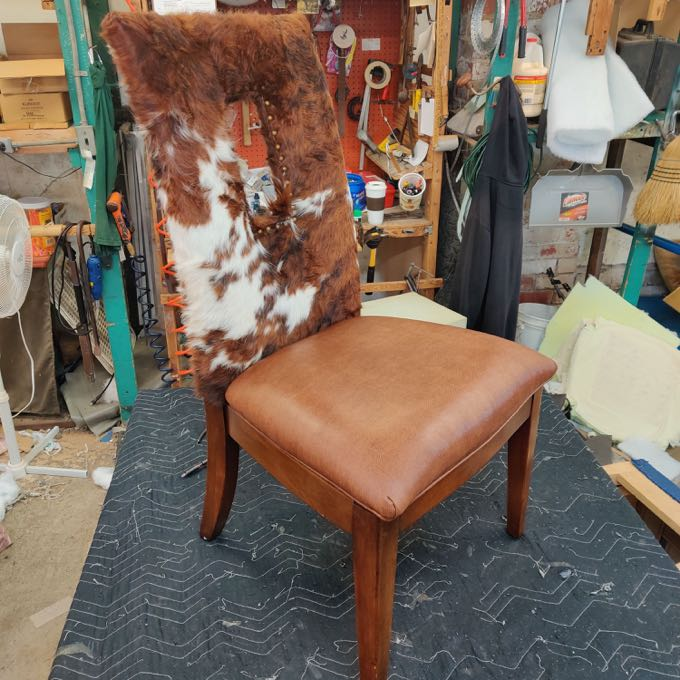
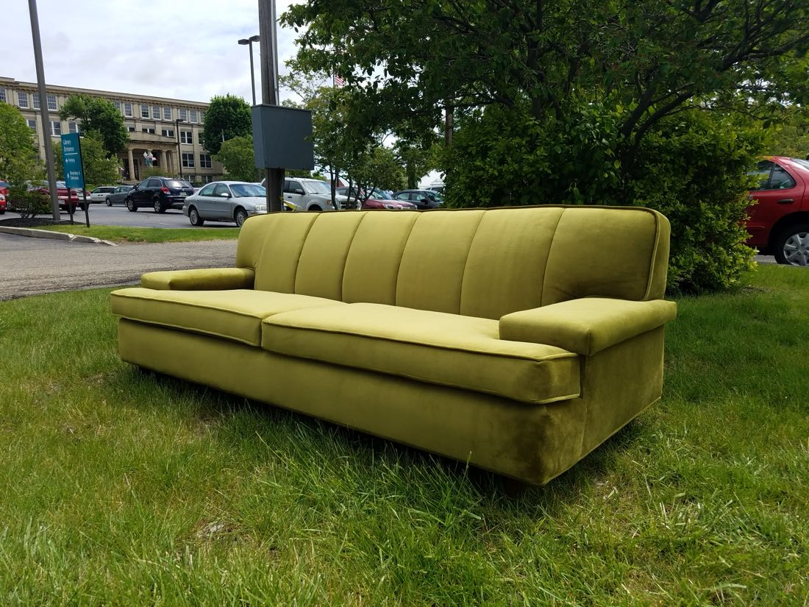
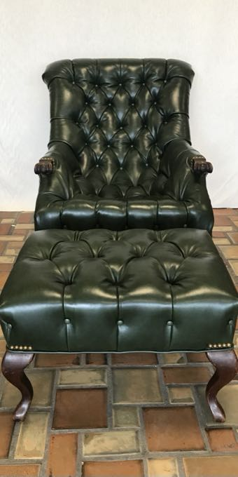

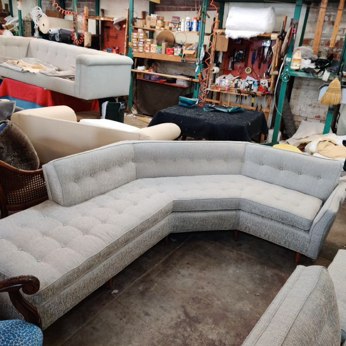
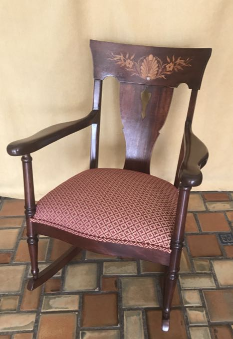
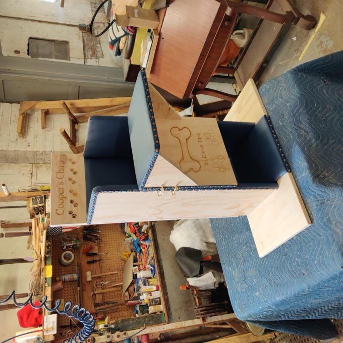
For businesses & institutions
Clean, safe, good-looking seating.
Cost effective solutions for offices, exam rooms, restaurants, churches and auditoriums. We offer quick return of your finished pieces — sometimes the same day they're picked up.
- Dental chairs
- Exam tables
- Waiting room chairs
- Restaurant booths
- Bar stools
- Church pews
- Weight room equipment
- Ballroom & conference chairs
- Office chairs
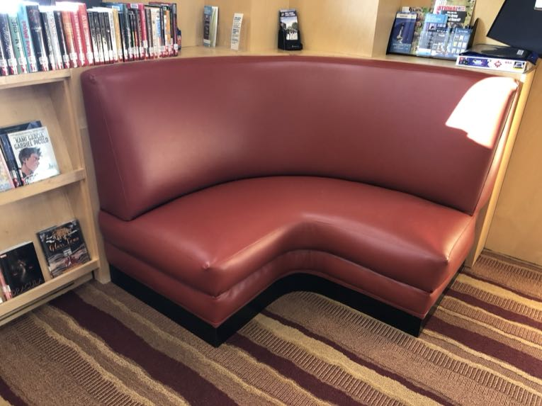
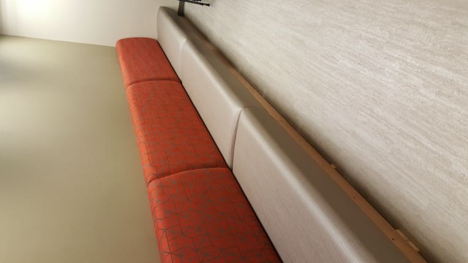
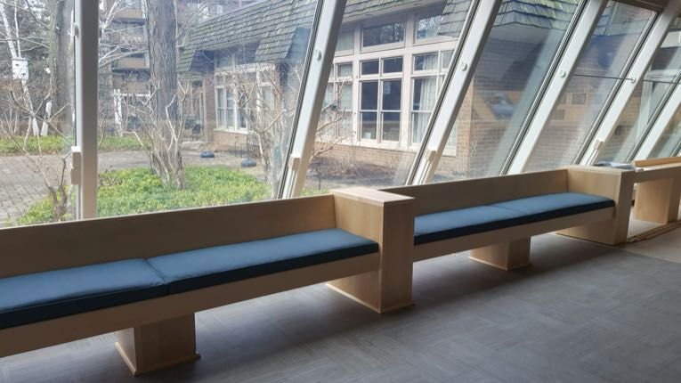
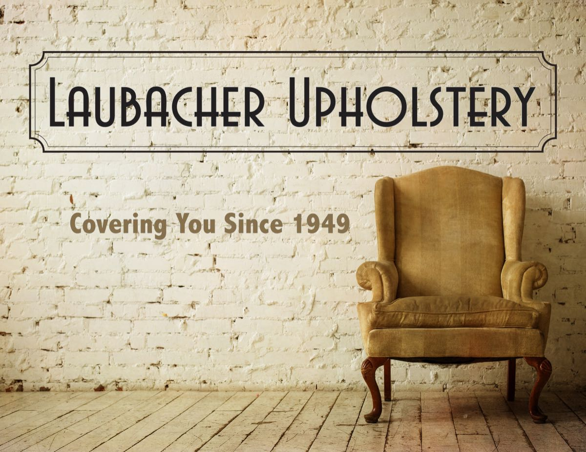
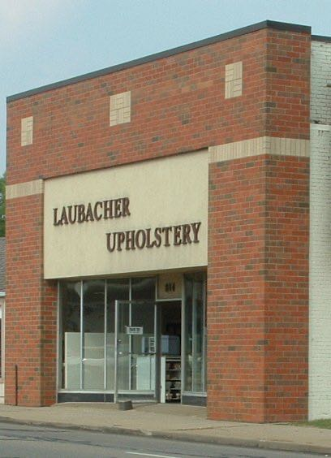
Our story
1949
A family shop, still covering Canton.
Laubacher Upholstery started in 1949 with refinishing and reupholstering furniture in a small building behind the family home.
The family tradition of fine workmanship and customer service continues today with KC Laubacher, the founder's son, in downtown Canton. We do all types of commercial and residential reupholstery, custom built high quality upholstered pieces and refinishing of your fine wooden furniture.
You'll find us at 814 Cleveland Ave. NW — the next building past St. Peter's Church on the right.
Good to know
Questions, answered.
How do I get a quote?
Do you pick up and deliver?
Can I bring my own fabric?
Do you replace foam in cushions?
Can you just strip a piece so I can finish it myself?
Where do I park for drop-offs?
Visit or get in touch
Let's talk about your piece.
Start transforming tomorrow by calling for a free estimate today.
Mon–Fri 7:30 am – 4:30 pm